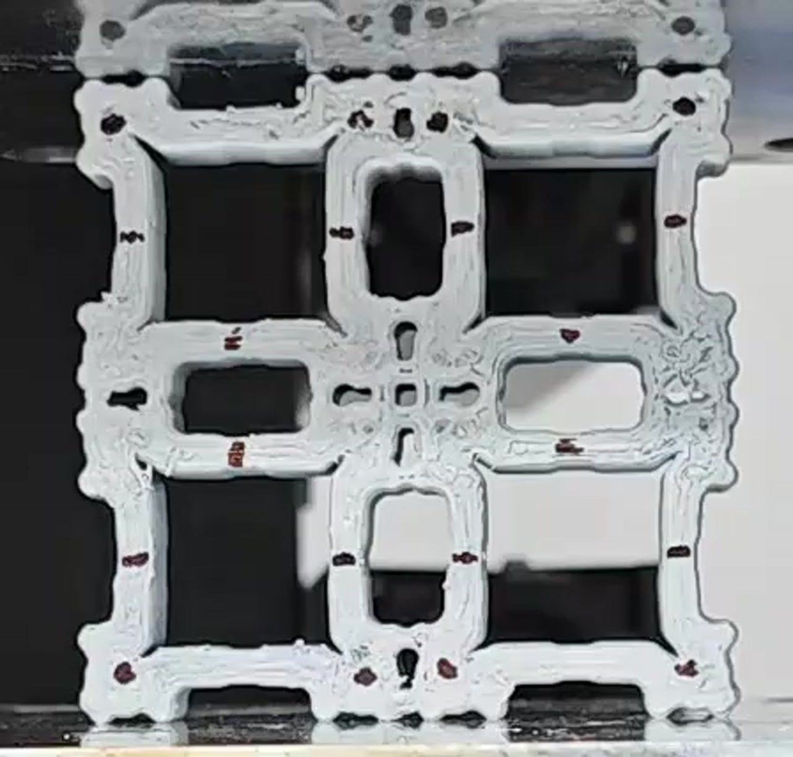
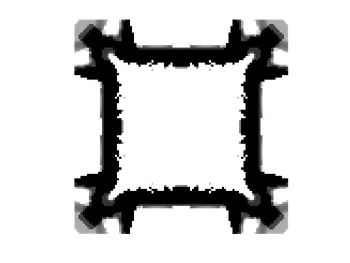
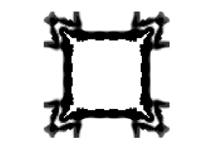
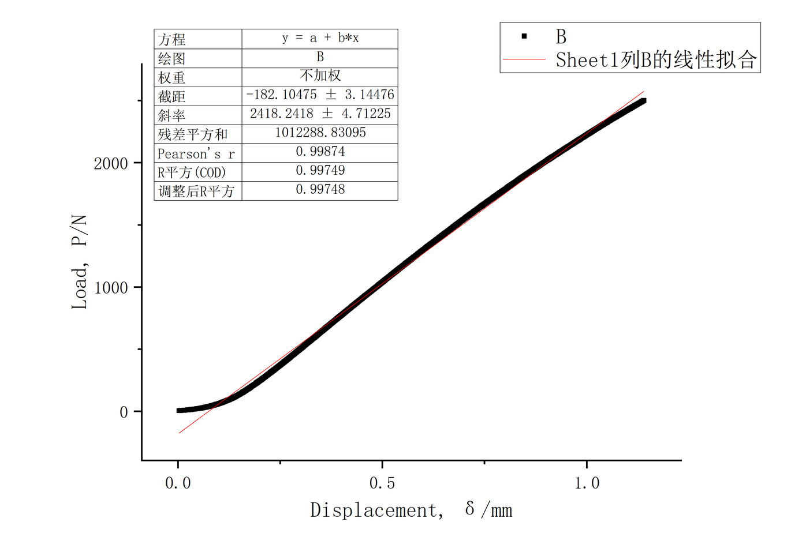
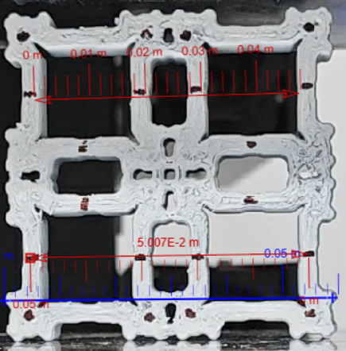

Topology-optimized auxetic structure
How can a negative-Poisson-ratio structure retain its unusual deformation while becoming stiff enough to be useful? I explored the design parameters computationally, printed a candidate, and tested it in compression.

01Define the trade-off
Auxetic structures expand laterally when stretched and contract laterally when compressed. Their geometry can provide energy absorption and controllable compliance, but low stiffness can limit practical use. The design task was therefore not simply “make it auxetic,” but improve equivalent stiffness without losing the negative Poisson’s ratio.


02Explore the design space
I varied three parameters and compared the resulting topology, normalized equivalent modulus, and Poisson’s ratio. Visual crispness alone was not treated as the objective: connectivity, printability, and structural continuity also mattered.
- PenalizationPushes densities toward solid or void, but excessive values can create brittle paths.
- Filter radiusControls feature size; larger values favor thicker, more continuous members.
- Volume fractionBalances material use against stiffness and the purpose of topology optimization.
The parameter sweep was relatively coarse. The presentation identifies denser sampling as a necessary next step rather than claiming a global optimum.
03Print and compress

The selected geometry was fabricated and compressed. Longitudinal and transverse dimensions were measured before and after loading, while the load-displacement curve was used to estimate the modulus.
The printed part had been stored before testing and may have absorbed moisture, so the measured properties should not be treated as a clean validation of the numerical material model.
04Read the result carefully


The presentation reports a modulus of 219 MPa and a Poisson’s ratio of -0.667. These values support the intended auxetic response in this test, but the manual choice of the linear range, measurement-point placement, and material condition all affect the numbers.
05What I would change
- Use a denser parameter sweep around promising regions.
- Define the modulus fitting interval before testing rather than selecting it afterward.
- Track points on deforming cell edges, not only relatively rigid vertices.
- Control printing, storage, and conditioning before comparing experiment with simulation.